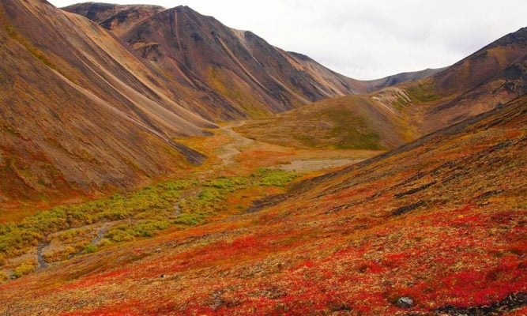
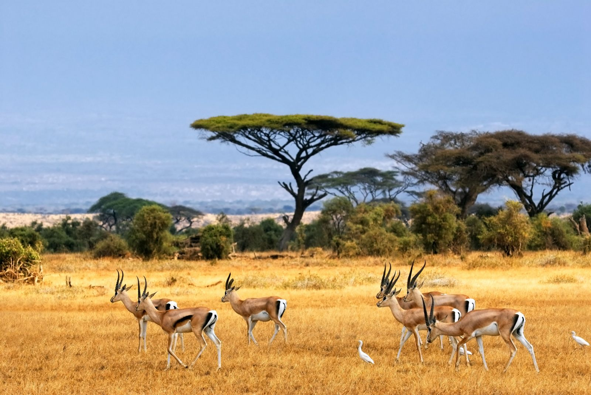

Podemos definir a vegetação como sendo a cobertura vegetal natural de uma determinada região. A vegetação de uma região depende muito de outros aspectos da geografia física, como o relevo, o solo e, principalmente, o clima.
Xerófitas:
plantas adaptadas à falta de umidade
Higrófilas ou higrófitas:
plantas que necessitam de muita umidade, ricas em folhagem e sempre perenes.
Tropófilas:
plantas que vivem em estações secas e úmidas.
Acicufoliadas:
plantas que possuem folhas na forma de agulhas, como, por exemplo, os pinheiros, nas quais a transpiração é menor
e maior a preservação de água.
Latifoliadas:
plantas de folhas largas e existentes em regiões muito úmidas.
Caducifólias:
plantas que perdem suas folhas nos períodos frios e secos do ano.
A composição dinâmica da biosfera produz diferentes vegetações, climas, relevos entre outros, dessa forma as paisagens naturais variam de grandes florestas tropicais a desertos, montanhas e imensas geleiras. Para a consolidação dos mais variados tipos de vegetações existentes no mundo é preciso que haja a interação entre os elementos naturais (clima, solo, relevo, vegetação e energia).
Isso fica evidente quando notamos as regiões com predominância de clima quente e chuvoso, que deriva grandes florestas tropicais com enorme umidade e precipitação. Já nos lugares de climas áridos, semi-áridos e desérticos a composição de vegetação é muito diferente, pois as plantas e os animais são adaptados às condições adversas, como a falta de água e alimento.
Nas paisagens naturais o que mais se destacam visualmente são as vegetações. As seguir algumas características das principais formações vegetais do mundo:
Floresta Tropical: essas se localizam geograficamente, em geral, na América do Sul, América Central, África, Ásia e Oceania. Todas as regiões citadas possuem características semelhantes como clima quente e úmido, proporcionando assim o surgimento de grandes florestas com uma enorme riqueza de biodiversidade, essas são as áreas do planeta que concentram a maior parte dos seres vivos.

Floresta Temperada: essa vegetação é encontrada principalmente no hemisfério norte, situada entre os trópicos e os círculos polares, os países que possuem esse tipo de florestas são Estados Unidos, Europa, Ásia e no Sul do Chile com climas temperados. As florestas temperadas são diferentes em relação às florestas tropicais, pois a primeira produz uma quantidade menor de variedade de plantas e animais. As florestas temperadas possuem características singulares, no inverno e outono as árvores perdem suas folhas, e por isso são denominadas de caducifólias.

Florestas de coníferas: essa vegetação é encontrada geograficamente em regiões com proximidade aos círculos polares, com características de clima com inverno bastante rigoroso. As coníferas são denominadas também de floresta boreal, é composta por pinheiros.

Tundra: se faz presente no extremo norte do continente americano, europeu e asiático, a particularidade dessa vegetação é em relação ao clima, pois se desenvolve em áreas de clima frio e polar, com duas estações (verão e inverno), sendo inverno rigoroso e verão com temperatura um pouco mais elevada. Na tundra as vegetações encontradas são musgos, liquens e plantas herbáceas, esses vegetais se desenvolvem de forma mais efetiva no verão, pois na estação do inverno toda área fica coberta de gelo.

Savana: esse tipo de vegetação tem uma grande semelhança com o cerrado brasileiro, as savanas são compostas basicamente por gramíneas e capins, árvores e arbustos espalhados na paisagem. As savanas são situadas geograficamente em regiões de clima tropical, com duas estações bem definidas, sendo uma de seca (inverno) e uma chuvosa (verão). No mundo essa vegetação se faz presente nos seguintes países e continentes: América do Sul, África, Ásia e Austrália.

Estepe e pradarias: são compostas por plantas herbáceas, arbustos e gramíneas, em áreas de clima temperado, geralmente o estepe desenvolve em lugares mais secos, enquanto que as pradarias em locais mais úmidos, essa é utilizada como uma ótima pastagem na pecuária. Os dois tipos de vegetações são encontrados na América do Norte, Ásia e América do Sul (Argentina, Uruguai e Rio Grande do Sul nos pampas gaúcho).

Vegetação desértica: são áreas com predominância de clima seco e árido, os vegetais são adaptados à falta de água, suas raízes são extensas e atingem o lençol freático, quando raramente ocorre chuva brotam plantas, mas com um período muito curto de vida.